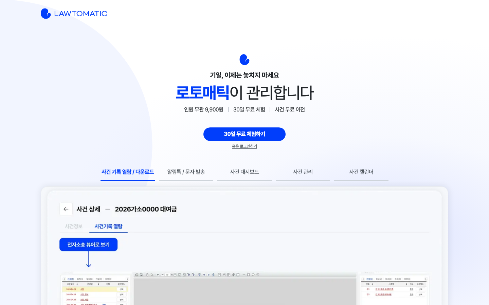
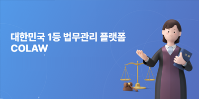
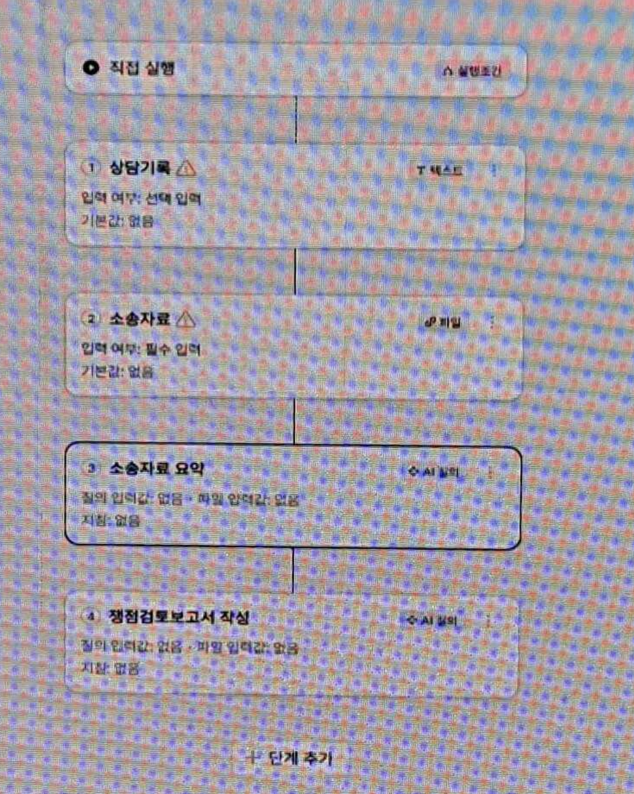
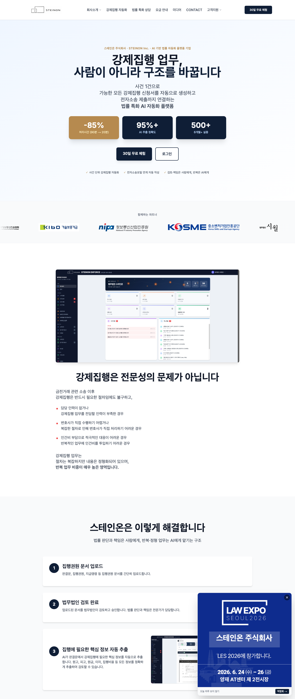

이번 엑스포를 통해, 우리 회사의 IPO 모델이 경쟁력 있는 기획이며 중요한
자산이라는 확신이 깊어졌다.
다른 회사들은 변호사 또는 송무가 일을 처리할 때 사용하는
‘툴’을 개발하고 있었다. 업무의 흐름과 노하우는 여전히
그들의 머릿속, 혹은 무의식 안에만 존재한다. 그들의 프로덕트는 업무
도중 필요하다고 느껴지는 순간에 꺼내 쓰는 도구에 머문다. 본질적으로
달력 앱이나 엑셀, 구글 독스와 다르지 않은 셈이다.
수임 상담, 사실관계 파악, 송무, 회수에 이르는 전 과정 — 그 워크플로우
자체를 연구하는 회사는 보지 못했다. 그들은 우리 IPO의 한 단계에서 쓰일
법한 툴(소장 작성, OCR 등)을 매우 높은 수준으로 고도화하고 있을
뿐이다. 반면 우리가 지향하는 것은, IPO만 기계적으로 따라가면 누구든
사건 종결까지 도달할 수 있는 시스템이다.
그렇기에 그들의 접근은 변호사와 송무의 일을 ‘편하게’
만들어줄 수는 있어도, 그들을 ‘대체’할 만큼의 자동화에는
끝내 이르지 못한다.
소송이 전체적으로 어떻게 흘러가는지, 그 워크플로우가 정의되어 있을 때
비로소 완전한 자동화가 가능하다.
이런 관점에서 IPO느 우리 회사의 가장 큰 자산이다. 아쉬운 것은, 이
기획이 개발자들과 실무자들에게 제대로 설명되거나 공유된 적이 없어
주먹구구식으로 진행되고 있다는 점이다.
2.참가 업체 검토
부스에서 직접 확인한 내용을 기준으로 작성했으며, 각 사 웹사이트에서
추가로 확인한 사항은 별도로 표기했다.
전자소송 사이트의 사건 기록을 시스템으로 가져오고, 증거·자료를
업로드하면 AI가 OCR로 내용을 읽어들인다.
급하게 자료를 찾아야 할 때, 상담 직전 요약을 확인할 때, 소장을
작성할 때 AI를 활용하는 구조다.
OCR 예시: 이체내역 증거가 엑셀 형태의 정형 데이터로 자동 변환된다.
사건 기록에 바로 메모할 수 있다(팀원 공유 및 AI 학습에 활용) —
유용해 보이는 기능이다.
특이사항 및 의문점
OCR에 상당한 투자를 했다고 자신했지만, 구체적인 방식에 대한 설명은
없었다.
사건별 RAG 구축 여부에 대한 언급은 전혀 없었다. “자료를
올리면 AI가 알아서 대답한다”는 설명이 사실이라면 RAG를
구축했을 가능성이 있으나, 확인하지는 못했다.
전자소송 기록 수집과 에디터 제공을 제외하면, 변호사가 GPT
프로젝트를 활용하는 것과 실질적인 차별성이 있는지 의문이다.
AI 활용 용도는 사실상 요약에 국한된다.
우리 회사와의 비교
비교 열위
OCR 기술은 우리가 뒤처져 있다. 다만 추후 도입·보완이 가능한
영역이다.
전자소송 사건기록 자동 수집 기능이다. 구현 방식이
궁금하지만, 사건 한두 건 규모이기에 가능했을 수 있다. 수백
건을 다루는 우리에게는 훨씬 큰 기술적 요구사항이 된다.
비교 우위
아이렉스는 변호사가 업무 중 필요할 때 사용하는
‘툴’에 머문다.
우리는 변호사가 수행하는 업무 자체, 즉 워크플로우 전체를
시스템으로 정의한다.
배울 만한 점
전자소송 사건 기록을 우리 시스템으로 가져오는 기능은 반드시 확보해야
한다. 이것이 가능해지면 ① 송무 업무 전체를 우리 시스템 안에서 처리할
수 있고 ② 변호사와의 소통이 크게 개선된다. 입출금 내역 증거의 엑셀
자동 변환 역시 도입할 가치가 있다.
웹사이트 확인 사항
2024년 11월 AiLex v1을 출시했다. “변호사의 효율을 1,000배 이상
개선”을 슬로건으로, 수만 페이지의 증거문서를 자동 분석해 사건
요약·타임라인·인물관계도를 생성한다고 소개한다. 상위 로펌·법률사무소
도입, 과기정통부 AI 바우처 사업 선정 등을 레퍼런스로 제시하고 있다.
웹사이트 확인 사항
“가장 복잡한 도산 실무를 완벽 처리하는 AI 에이전트”를
표방한다. 상담(AI 사건 분석·쟁점 요약) → 수임 관리(통화 실시간 변환,
알림톡) → 서류 발급(자동 분류·저장) → 신청서·보정서 작성(법원 양식
자동 완성) → 기일 관리(대법원 연동)까지의 통합 처리를 내세우며, 업무
시간 92% 절감·누적 500건 처리 등을 성과로 제시한다.
웹사이트 확인 사항
BHSN(2020년 설립)의 리걸 AI 플랫폼으로, 법률 특화 LLM, RAG, 자체
법률문서 OCR을 결합했다. 100쪽 내외의 영문 계약서를 1분 내 리뷰하고
조항 해석·수정 방향을 제시한다고 하며, ‘큐(Cue)’는
지급일·갱신일 알림, 체결본 관리 등 계약 이후 후속 업무를 자동화한다.
CJ제일제당·한화솔루션 등 대기업 도입 사례를 보유하고 있다.
송무보다는 기업 법무·컴플라이언스에 초점이 맞춰져 있어 우리와는 사업
영역이 다르다.
기본적으로 송무 관리 프로그램이다. 기일 관리, 실시간 사건기록 확인,
팀 협업이 가능하며, 여기서도 핵심은 사건기록을 시스템으로 가져오는
기능이다. 특히 전자소송 등 다른 사이트에 전혀 들어가지 않고 이
안에서만 업무를 볼 수 있다는 것이 큰 장점이다.

로토매틱 웹사이트 — 사건기록 열람과 전자소송 뷰어를 한 화면에서
제공한다.
웹사이트 확인 사항
“기일, 이제는 놓치지 마세요”를 내세우는 사건 관리
플랫폼이다. 대법원 ‘나의 사건 검색’과 KICS를 일괄·자동
실행해 1시간마다 사건 현황을 갱신하고, 불변기한·변론기일 등 중요
기일을 자동 감지하며, 진행현황 변경 시 알림을 보낸다. 상담파일의
클라우드 업로드와 AI 요약·텍스트 변환, 의뢰인 알림톡 발송,
전자선임계약서 발송을 지원하고, PRO 요금제에서는 협업 요청·사건
배당·수행내역 공유가 가능하다. 가격은 BASIC 월 990원, PRO 월
9,900원(인원 수 무관)으로 매우 저렴하게 책정되어 있다.
로토매틱과 비슷한 계열의 업무관리 프로그램이다. 이 서비스 역시
전자소송 등 다른 사이트에 전혀 들어가지 않고 코로 안에서만 업무를 볼
수 있다는 것이 큰 장점이다.
특히 법인 등기를 발급받고 싶으면 PDF로 바로 내려주는 점이 신기했다.
우리에게도 있으면 매우 좋을 기능이다.

코로(COLAW) — 법무사·변호사 대상 통합 법무관리 플랫폼.
웹사이트 확인 사항
주식회사 앤쌤이 운영하는 법무사·변호사 사무소 대상 통합 법무관리
플랫폼으로, 2002년 출시되어 “대한민국 1등 법무관리
플랫폼”을 표방하며 약 13,000명의 고객을 확보하고 있다고
소개한다. 사건관리(실시간 조회, 비용내역서·영수증·세금계산서 자동
출력), 기일관리(대법원 실시간 연동, SMS 알림), 1만여 건의 서식 자동
작성, 개인회생·파산 변제금 자동 계산, 부동산·상업·소송 공과금 계산,
회계관리(전표 작성, 국세청 전송)까지 포괄하고, 문서
자동발급(DOQU)·AI 챗봇(LawNa) 같은 부가 서비스도 운영한다. 송무
특화라기보다는 사무소 실무 전반을 아우르는 올인원 시스템에 가깝다.
이번 엑스포에서 가장 큰 부스를 운영하고 있었다. 판례 검색을 기반으로
한 법률 AI 리서치 서비스로, 데이터의 양과 질에서 확연한 차이를
보였다.
강의 시연 — 소장 작성 워크플로우 만들기
부스에서 강의 시연도 진행했는데, 주제는 ‘소장 작성 워크플로우
만들기’였다. 변호사가 소장이 작성되는 워크플로우(스킬)를 직접
만들어, 매번 같은 방식으로 소장을 생성할 수 있도록 하는 툴이다.
블록을 연결하는 방식으로 워크플로우를 구현한다.
블록 타입: 파일 블록(INPUT), 텍스트 블록(INPUT), AI 생성 블록,
알림 블록 등.

소장 작성 워크플로우 빌더 — 상담기록·소송자료(INPUT) → 소송자료
요약·쟁점검토보고서 작성(AI)을 블록으로 연결한다.
AI 검색 (RAG)
AI 채팅 UI에 질문하면 관련 답변이 나오고, 답변에 근거·참고·출처가
있는 경우 해당 글자가 파란색 링크로 걸린다. 클릭하면 원본으로
이동한다. 대한민국 모든 법령·판례, 그리고 여러 책이 인용·근거로
활용되는 것을 확인했다.
기술적으로는 AI를 학습시킨 것이 아니라 RAG 시스템을 구축했다.
그래프 DB 제품을 쓰지 않고 그래프 DB를 직접 구현했으며, 의미
검색과 키워드 검색을 모두 사용 중이다.
AI 답변의 퀄리티와 정확도는 이번 컨퍼런스에서 압도적이었다. 결국
AI가 참고하는 데이터의 차이다.
출판 사업 — 데이터 독점 전략
출판 사업을 병행하고 있다는 점이 매우 흥미로웠다. 법률 관련 서적을
직접 출판해 데이터를 독점하고, 자체 출판한 책을 볼 수 있는 편리한
전자책(EBOOK) 뷰어까지 개발해 두었다. 여기에도 AI가 붙어 있다.
핵심
엘박스 AI가 자사가 출판한 법률 서적을 그대로 학습·인용·참고하기
때문에 시너지가 난다. 퀄리티 경쟁에서 밀리지 않으려고 출판 사업까지
한다는 점, 즉 AI의 경쟁력을 데이터에서 확보하려는 전략이
인상적이었다.
우리 회사와의 비교
현재 우리 소장 작성 AI의 퀄리티는 매우 좋지 않은 것으로 알고 있다.
엘박스는 복잡한 사실관계와 증거를 파악해 퀄리티 있는 소장을 작성해낼
잠재력이 충분하다. 우리는 복잡한 사건을 다루지는 않아 엘박스만큼의
고도화가 필요하지는 않지만, 그래도 신뢰할 만한 자동화를 위해서는
배울 필요가 있다.
다만 변호사가 직접 소장 작성 AI 워크플로우를 짜게 하는 툴이 얼마나
의미 있을지는 의문이다. 예전에 우리 회사 내부에서도 비개발자가 소장
작성 워크플로우를 자유롭게 구성할 수 있는 시스템을 기획했으나,
엔지니어적인 사고방식 없이는 힘들다는 판단하에 그 방향으로는 가지
않고 있다.
배울 점
데이터 퀄리티와 구조화 시스템에서 나오는, 퀄리티 있는 RAG 기술.
웹사이트 확인 사항
김앤장 출신 이진 대표가 2019년 창업한 리걸테크 기업이다. 국내 최다
규모의 판결문 데이터베이스(2025년 기준 약 410만 건)를 기반으로 판례
검색, 엘박스 AI, 변호사-의뢰인 매칭(엘파인드), 법률 콘텐츠
플랫폼(스칼라) 등을 운영한다. 무분별한 웹 크롤링에 의존하는 일부
생성형 AI와 달리 직접 계약해 확보한 전문 법률 콘텐츠를 근거로 인용해
답변 신뢰도를 높인 점을 차별점으로 내세우며, 경찰청과 판례 검색 무료
이용 계약을 맺는 등 법률전문가 시장에서 입지를 넓히고 있다.
이번에 새로 출시한 AI다. 엘박스와 달리 워크플로우를 직접 설정하는
툴을 제공하지 않는다. 즉, 변호사에게 하네스를 직접 맡기지 않는다.
하네스는 내부 전문가가 개발하고, 변호사는 이를 이용만 하는 형태다.
슈퍼에이전트에 증거 등 데이터를 전부 때려 넣으면 알아서 소장을
생성한다. 시간은 오래 걸리는데, 이는 AI가 탐색·정리 등 내부에 구현된
하네스에 따라 여러 에이전트가 알아서 일한 뒤 소장을 만들어내기
때문이다. 근거·인용·참조는 엘박스처럼 클릭하면 원본을 확인할 수
있다.
기술적 특징
그래프 DB, PostgreSQL 등 여러 DB를 함께 사용하고 있다.
의미 검색과 키워드 검색을 모두 사용하며, 청킹(chunk) 등 세부
기법도 적용해 내부적으로 상당히 빡빡하게 구현되어 있다고 한다.
시사점
변호사에게 워크플로우 설계를 맡기는 엘박스와 달리, 로앤컴퍼니는
하네스를 내부 전문가가 만들고 변호사는 사용만 한다. 앞서 우리 회사가
‘비개발자가 워크플로우를 직접 구성하는 시스템은 엔지니어적
사고방식 없이는 힘들다’고 판단했던 방향과 맞닿아 있다.
웹사이트 확인 사항
법률 플랫폼 ‘로톡’으로 잘 알려진 리걸테크 기업이다. AI
서비스로는 판례 500만 건 이상을 담은 빅케이스와 법률 AI 어시스턴트
슈퍼로이어(2024년 7월 출시)를 운영한다. ‘슈퍼에이전트’는
슈퍼로이어의 신규 기능으로, 업무 목적에 따라 AI가 스스로 업무 흐름을
설계하고 필요한 작업을 수행한다. 슈퍼로이어는 출시 반년 만에 개업
변호사의 약 20%인 6,000명의 가입자를 확보했다. 대화를 나눈 이상후
AI혁신센터장은 뇌공학 전공 후 검사·변호사를 거친 이력을 갖고 있다.
강제집행 업무에 특화된 AI 자동화 플랫폼이다. 집행권원 파일을 받아
필요한 정보를 자동 추출하고, 전자소송 제출까지 연결한다.

스테인온 웹사이트 — ‘강제집행 업무, 사람이 아니라 구조를
바꿉니다’를 내세운다.
단순한 모델
고객으로부터 집행권원 파일을 받는다.
OCR을 통해 필요한 정보를 추출한다.
자동으로 강제집행을 제출한다(RPA).
특이사항
파일 퀄리티를 지나치게 이상하게 넣지만 않는다면 OCR 정확도는 꽤
높다.
파이썬 RPA가 아니라 크롬 익스텐션으로 동작한다.
핵심
강제집행이라는 영역에서 워크플로우를 정의하고 자동화를 시행하고 있다.
우리 워크플로우와 크게 다르지 않다.
우리 회사와의 비교 — 개선이 필요한 점
현재 우리 회사의 강제집행 쪽 개발은 스테인온에 비해 아래 사항을
개선해야 한다.
좋지 않은 UX.
그로 인해 고객으로부터 정보를 받는 데 시수를 많이 쓴다.
위임으로 인한 시수가 크다.
RPA가 불안정하다.
집행권원으로부터 필요한 정보를 자동 추출하는 기능이 없어 전부
입력에 의존한다.
웹사이트 확인 사항
스테인온 주식회사가 운영하는 AI 강제집행 자동화 플랫폼이다.
판결문·지급명령 등 집행권원 문서를 업로드하면 법무법인 검토를 거쳐
AI가 원고·피고·원금·이자·집행비용 등 핵심 정보를 자동 추출하고,
가능한 모든 강제집행 신청서를 생성해 전자소송 제출까지 연결한다고
소개한다. 처리시간 90분 → 20분(-85%), AI 추출 정확도 95%+, 6개월
이상 500건 실증 등을 성과로 제시한다.